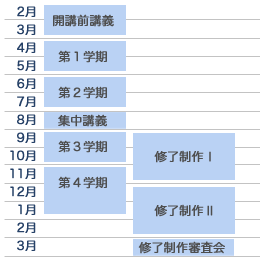

トップエスイーは、トップレベルのソフトウェア技術者を育成するための教育コースです。受講期間は原則１年間で、社会人の方の便宜を図り、夕方から夜の時間帯、場合によっては休日に講義を受け、演習に取り組むというスタイルをとっています。修了するためには、以下2つの要件を満たすことが必要です。
科目を履修して合格点を取ると、単位が取得できます。合否は主としてレポートで判定されます。30以上の科目が4学期に分かれて開講されており。夏や冬の集中講義もあります。講義は1コマ90分で行われますが、原則として、7コマ以上の講義からなる科目では1単位が、15コマ以上からなる科目では2単位が与えられます。詳細は科目一覧のページをご覧ください。
修了制作は，大学における卒業研究や、大学院における修士・博士論文研究に相当するものです。トップエスイーで学んだ技術や科学的なアプローチを、実際の問題に適用し、結果を発表していただきます。トップエスイーの講師の指導の下、原則として3ヶ月かけて取り組みます。詳細は修了制作のページをご覧ください。
このように、1年間のコースを受講していただくことが基本形態ですが、その他に、科目単位で任意の科目を選択して受講いただく制度もあります。この場合には、NPO法人トップエスイー教育センターが窓口になっています。詳細はトップエスイー教育センターウェブサイトの科目単位での受講・聴講サービスをご覧ください。

トップエスイーの受講者は1月初旬に決まります。 1月下旬にはオリエンテーションが行われ、各専門コースや共通科目の内容、科目の選択の仕方などが説明されます。
トップエスイーは正式には4月に開講となりますが、2月から3月にかけて「開講前講義」が行われます。これは基礎的・導入的な性格を持った講義群で、正式開講前にある程度時間をかけて予備知識を確認していただく狙いで開催しています。
4月から12月頃まで、4学期に分かれて講義が行われます。祝日などの関係で多少前後しますが、おおむね以下のような日程となります。
学期中は、月曜日から土曜日まで講義が組まれています。平日は18:20-19:50 と 20:00-21:30 の2コマありますが、原則として同じ科目が2コマ続けて行われます。土曜日は、最大4コマを実施します。
8月と1, 2月には、集中講義が行われます。7コマの講義が中心で、1日最大4コマを行い、2日間で1単位が取得できます。
修了制作は、受講生の希望に応じて、9月から11月までの3ヶ月、もしくは、12月から2月までの3ヶ月で実施します。特別に大きなテーマに取り組む場合には、9月から2月までの6ヶ月を使って行うこともできます。
12単位以上を取得し、修了制作審査会で合格すれば、修了要件が満たされます．3月下旬に修了式が行われ，修了者には修了認定証と楯が授与されます。
{kind=link}